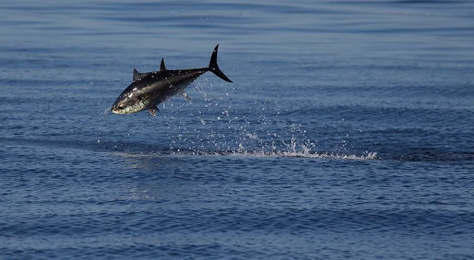
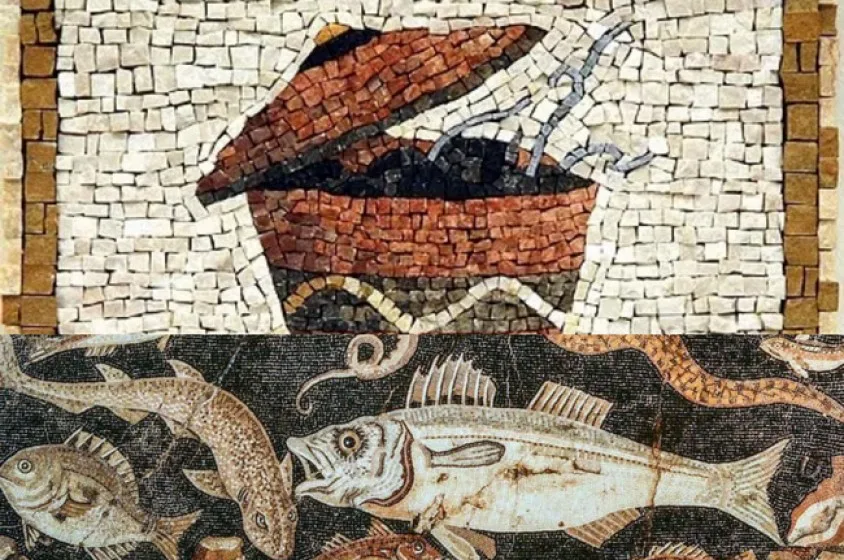

Dal fascino zoologico del Thunnus thynnus all'antica industria della salagione, fino ai tagli nobili della tradizione culinaria gallipolina.

Ricostruzione concettuale del tonno rosso (Thunnus thynnus) — illustrazione di esempio, non un'immagine storica.
Il Tonno Rosso del Mediterraneo (Thunnus thynnus) è uno dei predatori pelagici più veloci e imponenti del pianeta. Può raggiungere i 3 metri di lunghezza e superare i 600 kg di peso.
Dotato di un sistema vascolare unico (rete mirabile) che gli permette di mantenere la temperatura corporea superiore a quella dell'acqua circostante, possiede una muscolatura straordinaria che gli consente scatti fino a 70 km/h.
In primavera, stimolati dal riscaldamento delle acque, i tonni dall'Oceano Atlantico entravano nello Stretto di Gibilterra per raggiungere i bacini di riproduzione nel Mediterraneo. Nel loro viaggio verso il Golfo di Taranto, costeggiavano il litorale ionico salentino, infilandosi nell'architettura delle reti fissee di Gallipoli.
Una volta tirato a terra, il tonno doveva essere lavorato immediatamente prima che la carne deperisse.

I maestri tagliatori (sutaturi) sezionavano il pesce in parti ben definite. La carne veniva lavata ripetutamente in acqua di mare per eliminare il sangue residuo.
I grandi tranci venivano fatti bollire per ore in enormi caldaie di rame con acqua salata. Una cottura lenta che garantiva la sterilizzazione e la compattezza delle carni.
Il tonno veniva stivato a strati in barili di legno di quercia (salatura), alternato a sale marino grosso e coperto con il celebre olio d'oliva di Gallipoli, pronto per la spedizione nei mercati europei.
Le tonnare non sono un unico strumento: esistono molte varianti di reti e camere. Anche nelle vecchie fonti anglosassoni si legge che “Tuna traps used for catching the bluefin tuna (Thunnus thynnus) are not a single gear type.”
Questa pesca è una delle più antiche industrie organizzate al mondo e la tonnara di Gallipoli resta un esempio locale di una tradizione che ha attraversato millenni e tecnologie.
In tempi recenti, la tutela del mare passa anche attraverso aree protette come il Santuario Pelagos, nato verso la fine degli anni ’80 quando il Mediterraneo vedeva un grande sviluppo della pesca del pesce spada e un incremento delle catture accidentali di cetacei.
E mentre il clima riscrive le rotte migratorie, la difesa del mare diventa il futuro stesso di questa storia: approfondisci nella pagina dedicata Ecologia del Mare.
“The tuna fishery is one of the oldest organised fisheries in the world, and the bluefin tuna trap fishery is certainly the oldest industrial fishery as far as we know, dating back at least 26 centuries.”
Fonte: CV067010033.pdf
“L’utilizzo di queste reti con maglia molto grande ha determinato un incremento delle catture accidentali di cetacei o altri animali a cui le reti si attorcigliavano attorno alla coda.”
Fonte: ECOLOGIA DEI GRANDI PELAGICI DEL MAR LIGURE.pdf
La tecnica della tonnara si basa su una successione di camere e porte di rete che guidano il tonno verso la camera finale della mattanza. Oggi questa eredità storica incontra la necessità di ridurre l’impatto sulle specie protette e sulle acque condivise del Mediterraneo.
Fonte: CV067010033.pdf • ECOLOGIA DEI GRANDI PELAGICI DEL MAR LIGURE.pdf
Testi originali e studi che spiegano le tipologie di tonnara, l’iconografia e la tutela ecologica del mare.
Dall'antichità classica al Rinascimento, il tonno ha ispirato poeti, cuochi di corte e trattati di cucina, diventando un simbolo sia di lusso che di economia del non spreco.
Il primo poeta gourmet della storia descrisse i metodi di conservazione del tonno e il suo utilizzo in piatti che potevano durare nel tempo, anticipando l'arte del pesce salato.
Nei suoi epigrammi, il tonno entra nella cultura del banchetto romano e viene celebrato come ingrediente degno di un pasto raffinato ma anche di una tavola solitaria e gustosa.
Dal Rinascimento con Sacchi, Stefani e Corrado, il tonno veniva dissalgato, cotto al cartoccio o servito con cavoli e pomodoro. Una tradizione gastronomica ricca e popolare.
Nel XVII secolo si diffuse in Europa la leggenda del Re Luigi XIII che, dopo aver mangiato le gonadi del tonno catturato con le sue mani, avrebbe avuto un figlio destinato al trono: un esempio della mistica che circondava il pesce e la sua fama afrodisiaca.
Già nel XVIII secolo si sosteneva che il tonno fosse come un maiale di mare: ogni parte veniva valorizzata, dalle carni salate alle uova, che venivano trattate con rispetto e trasformate in prodotti pregiati.
La cucina della tonnara gallipolina era una cucina del non spreco: del tonno non si buttava via nulla. Mentre i tagli pregiati erano destinati al commercio estero e alle famiglie nobili, alla ciurma spettavano le parti povere ma ricche di gusto.
Memoria storica
Secondo il Marchese di Villa-bianca il tonno era come un porco di mare, perché offriva carni per una casa intera: dalle uova lavorate dai bottari e marinari alle parti nobili, nulla andava sprecato.
Nacquero così le ricette storiche: la ficazza (insaccato con i ritagli di carne salata e spezie), il tonno alla gallipolina (cucinato in umido con capperi, pomodorini e menta) e le ossa bollite da cui si ricavava il brodo per la pasta di bordo.